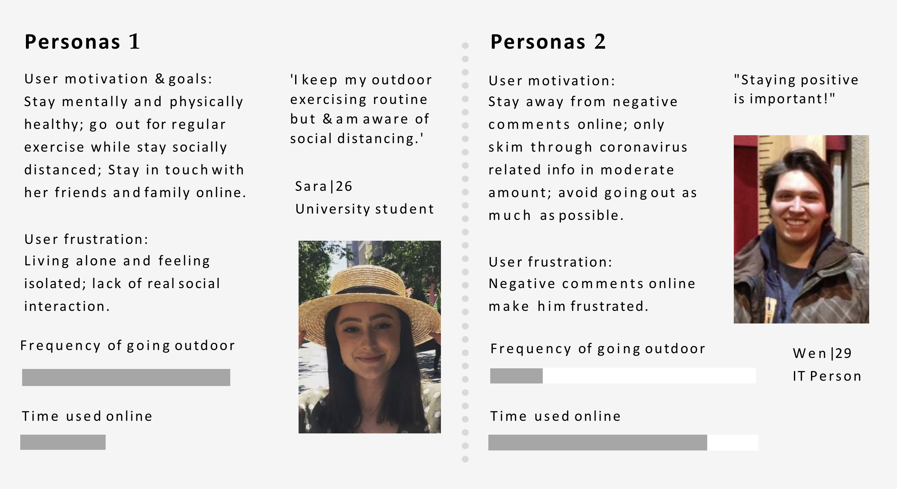
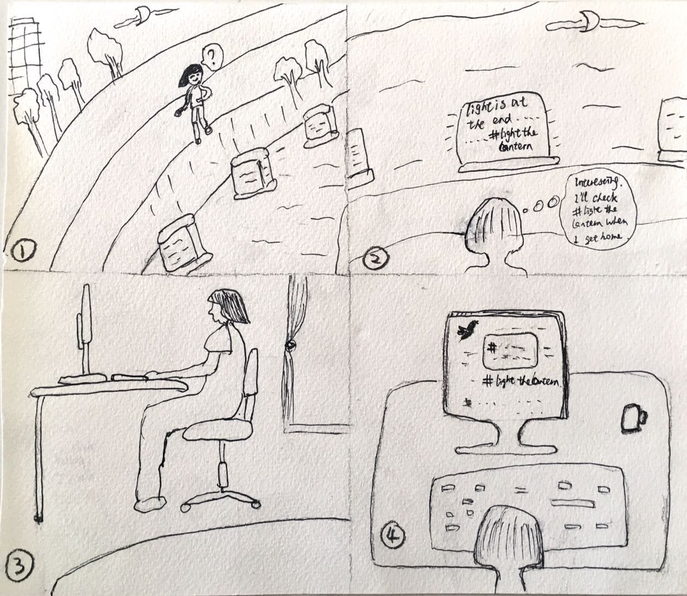
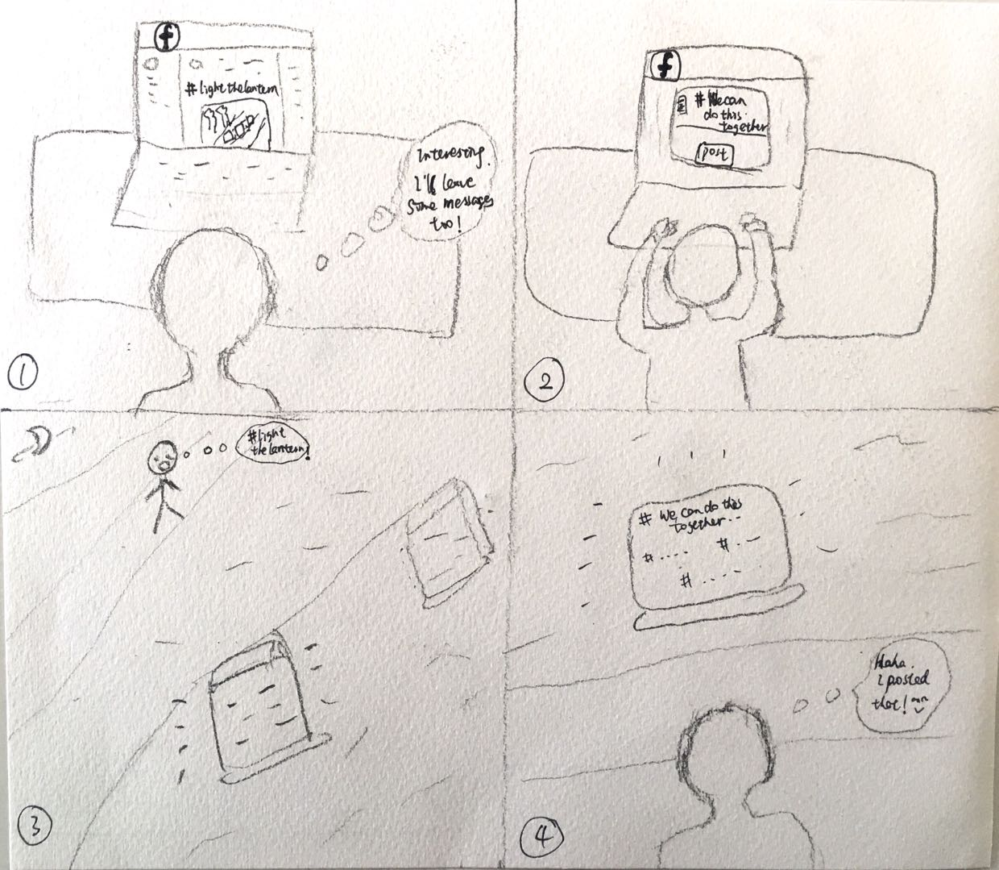
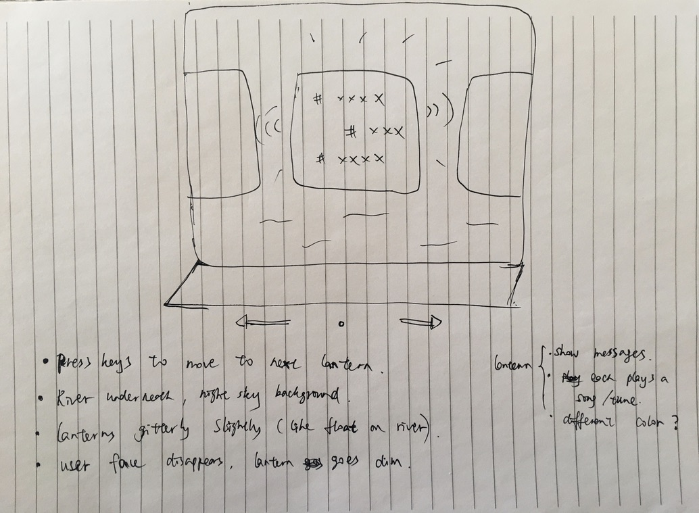
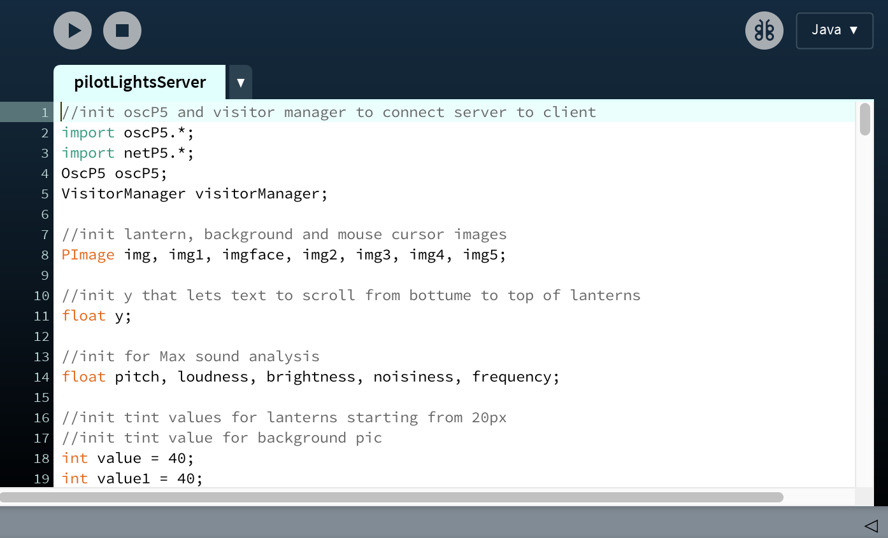
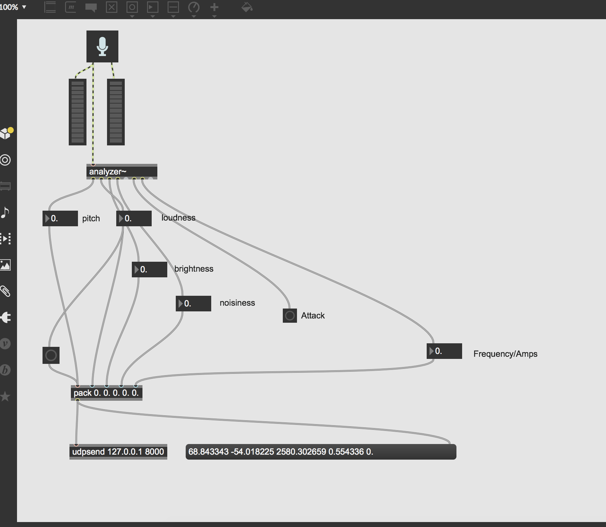
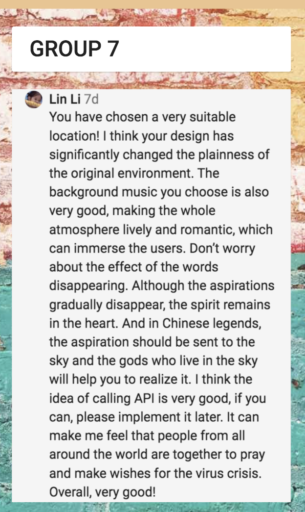

Problem
COVID 19 has utterly changed how people interact with each other. Social isolation, fear of unknown, unhelpful comments online all contributed to our increased level of anxiety. Social interaction at times as such is in jeopardy.
How do we facilitate and redefine human interactions within the constraints of social distancing during global pandemic?
My role
Solely responsible for the complete process from research, ideation, product design, user test to prototype development.
Tools
Processing | Max | Photoshop
Result
Timeframe
3 months (2020)
Concept video
Process diagram

Empathise with users
In order to understand the situation and experiences users have during COVID19, I conducted a survey with 29 users and interviewed 2 users via Zoom.
Over 60% of participants disliked that people ignored the needs of others and being selfish.
Reflection: mutual care and support are more important now than ever.
Majority of users considered outdoor exercising is important during COVID19 when social distancing is remained.
Reflection: under the lockdown situation, socialising becomes increasingly difficult. People go for natural wonders to seek connection with the outside world.
Two rounds of interview were conducted via Zoom.


“I live alone now. I video chat with my family often but it’s different from meeting them face to face. So going to nature makes me feel peaceful and connected somehow. ”
“I don’t go out as much, though I probably should just take a walk somewhere with natural scenery. I dislike the most is how people are so negative online since COVID19 started.”
Key findings
- Natural places are where people seek for the peace of mind.
- Internet, particularly social media, during a global pandemic can become somewhere people lash their anger and frustration.
- People long for positivity and mutual support.
Personas
Both Sara and Wen feel frustrated and long for a sense of connection and support. Sara keeps her outdoor exercising routine under social distancing policy, whereas Wen connects with others mainly over the internet.
Kongming lantern

Through secondary research, I came across the cultural activity named ‘kongming lantern’. In Asian cultures, kongming lantern represents hope. When being released to the sky, wishful messages are thought to be received by the universe.
I drew upon this metaphor to create this digital river lantern installation hoping to create a space where people can make wish for the future.
Design location
The design location is chosen to be at a beautiful river side - Rhodes Park walkway along Parramatta River - the most popular spot for natural wonders in local community. It is an open and absolutely beautiful area with several apartment buildings nearby.
Storyboards
 
In both persona walkthrough scenarios, users have their interests raised and figure out a way to participate. In first case, Sara sees the installation by accident and spots the recurring #lightthelantern. She researches about it and participates the event online afterwards; in case two, Wen finds out the event info online first and then goes to check out the installation.
System Diagram

Conceptualisation
There are two stages to the concept.
Stage 1
There is a social media campaign that introduces this event to local community. The idea is to invite community members to post wishful thoughts and positive messages on their social media accounts with #lightthelantern to stand in solidarity with the world that suffers during COVID19.

Stage 2

Week of Hope event carries out during week one of June 2020. Digital lanterns will be displayed afloat on Parramatta River. Lanterns are made with translucent water- proof material. The frontside of each lantern is embedded with LED lights and acts as a LED screen.

Each lantern also has an infrared sensor that detects movements at night and a built-in speaker. When the infrared sensor detects an object nearby, lantern will be switched from dim to bright and the messages people posted on social media will start scrolling up on lantern screen. Exotic and calm melody starts to play.
Due to COVID19, producing physical products became impossible. Therefore, the focus was to create an interactive online experience to simulate the real installation.
PROTOTYPING
Sketch ideas
When ideating the concept, I had following ideas in mind:
- Lantern displays messages in a rotating way
- Simulate real lanterns that have shimmering candle light effects
- When user interacts, lantern lights up, music starts playing; and lantern goes dim and music stops when user stops interaction.
Develop prototype
Processing and Max were the main tools I used in developing prototypes.
 
Ultimately, API data from social media sites will be collected with people’s messages under #lightthelantern. For the virtual experience, I imported text files to represent social media messages.

Three lanterns are displayed to demonstrate the transition of visiting different lanterns in real life. I added the candle light shimmering effects to three lanterns. The first lantern "shimmers" based on the pitch of sounds in the environment, second one on the frequency, third one on the timbre.
Iterations

Dr Luke Hespanhol created a server and client system framework, which ensured that users can interact with our design remotely and virtually under the same network. I transitioned the original codes to fit this framework.
Three rounds of user testing was conducted via Zoom. Users used "client codes" to interact with the server screen at a Zoom virtual meeting room. User testing plan was previously prepared, including a scenario task statement and a survey questionnaire after the task completed.
1st user test

The first round of user test was conducted with a classmate who thought the interaction was a bit simple.
“The interaction is a bit simple.”

To iterate, I took out the text shown on middle lantern and let users type and post messages from client side and messages will display on the lantern in middle.
This way, it becomes more relevant to the concept of sending wishful messages.
2nd user test
During second user test, user was confused about where she could put her mouse at as there wasn’t identifier on server screen representing her mouse curser.
“Hm, I don't know where to click my mouse.”

So I added a picture of the bask side of a cartoon image that moves with the mouse cursor on client side. I also changed the background picture to fit the atmosphere of the music and design.
3rd user test
In third round of user test, the user thought there were only three lanterns in the installation and didn’t know where the location was at.
“So there are only three lanterns in total? Where is this installation going to be put at?”

I added the animated overhead photo. The animation in overhead photo corresponds to the three lanterns underneath to give users a complete view of the installation. When one of the lanterns is triggered, a corresponding lantern in the overhead photo lights up also to show user where he/she would be at if they were in real life installation.
Virtual exhibition
Due to the coronavirus circumstance, we held a virtual exhibition on Zoom where users visited our ‘Virtual Gallery’. In order to allow the interaction to happen, I transitioned the original codes to suit a server and client framework. When users entered my Zoom gallery, they needed to turn on their client framework and connect to the same VPN network as me. They could then interact with the server screen using client codes.
The virtual exhibition went successfully. Six people entered my virtual exhibition room. Majority of them were able to understand the interaction without much explanation. Some users didn’t realise that they could type and post words until I told them. Many noticed different shimmering effects on lanterns. Everyone understood what went on in overhead photo. Many of them expressed feelings of calmness and a sense of immersion.
User testimonial
Final prototype
The overall experience
This project was an independent project due to social restriction. There has been ups and downs in the process. The biggest challenge I’ve had was to cope with sudden changes along the way, such as, transition codes to fit the client and server framework. Although it was quite challenging, it is also a very fulfilling and enjoyable experience overall. The positive feedback and acknowledgement from peers and tutors make all the efforts worthwhile.